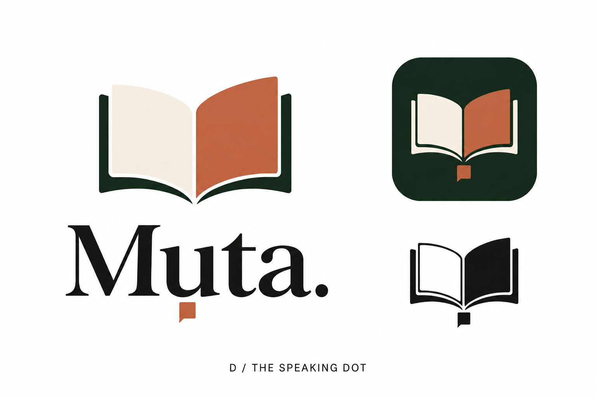
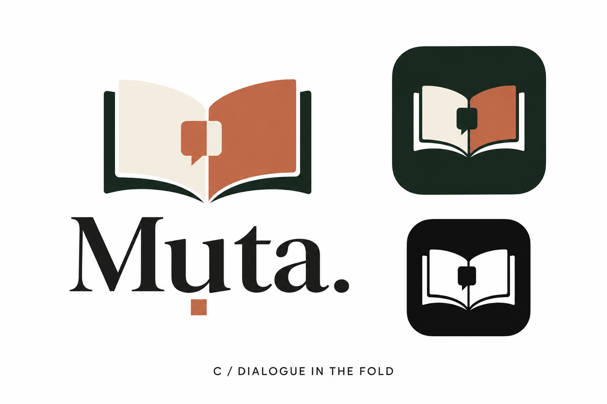
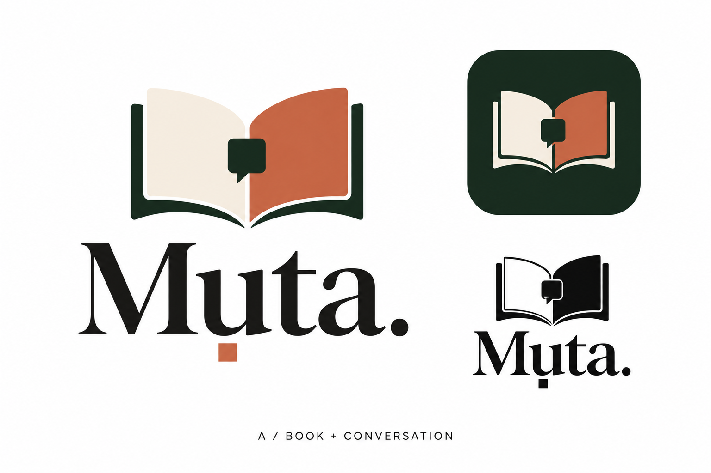
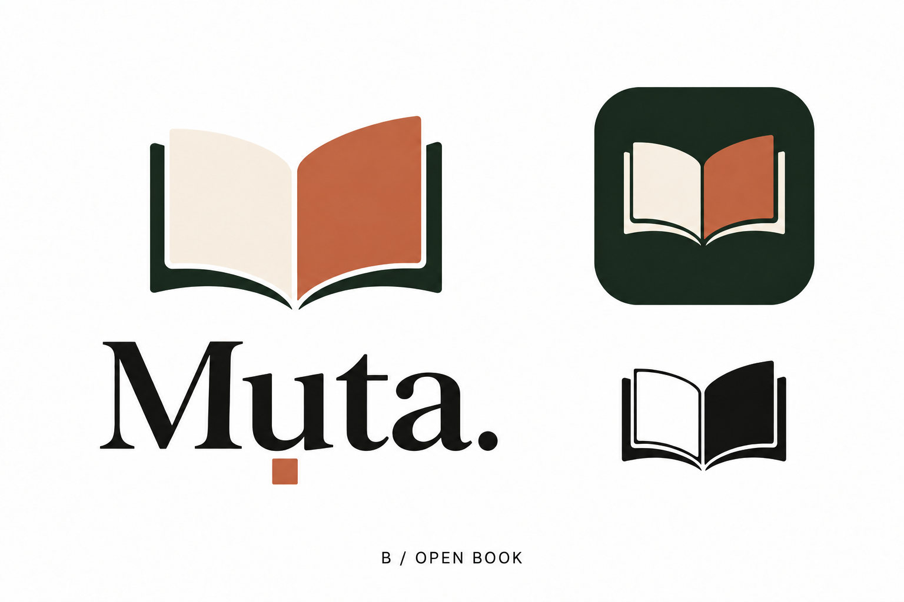

Muta · identity exploration · revised direction
An open book, with room for conversation.
The latest experiment makes the square itself the conversation cue. The book keeps its natural curves; any suggestion of an M is a secondary reading.
The square beneath the u stays with the name. Its connection to the Igbo pronunciation is part of the brief. It is preserved in each wordmark.
D · Your latest ideaThe square becomes dialogue
A small speech tail gives the square a second reading. It stays beneath the wordmark’s u and reappears below the standalone book. The pages remain clear.

Open full-size DC · Closest to your referenceTwo-tone conversation
The speech detail takes its colors from the pages. This keeps the warmth of the reference and makes conversation part of the full logo.

Open full-size CA · Clearer conversation cueDark conversation
A single forest speech shape is easier to pick out. It draws more attention to the conversation and has more visual weight than C.

Open full-size AB · The simpler comparisonOpen book
The book stands alone. Its pages, central fold, and curved binding carry the symbol; the pronunciation square remains beneath the wordmark’s u.

Open full-size BThese are visual concepts for choosing a direction. A and C explore different speech treatments in the full logo and share a similar app-icon treatment. The selected design will need consistent vector geometry, exact lettering and diacritic placement, and actual small-size tests.
Compare with your original reference